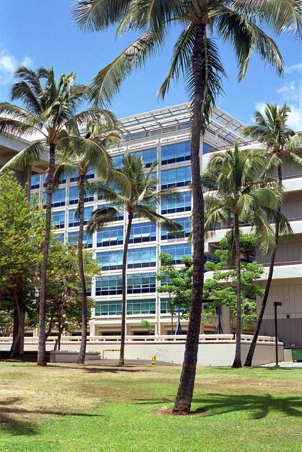
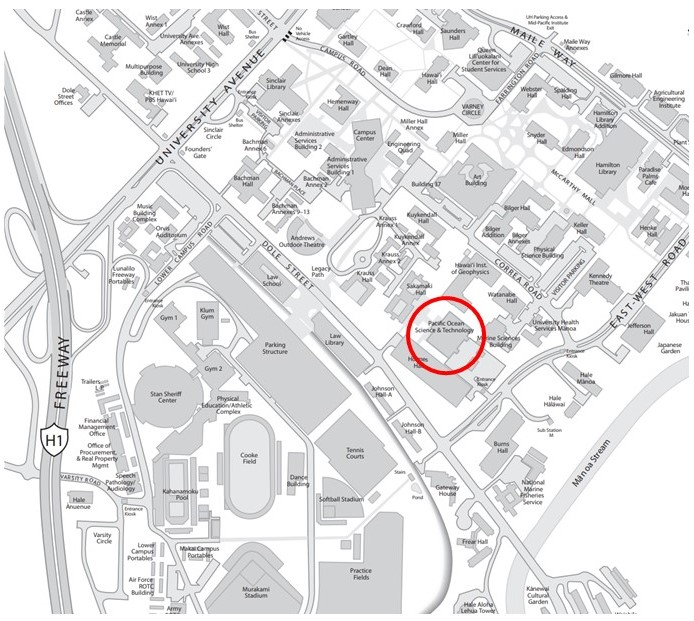
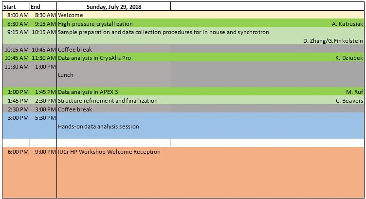

High-Pressure Single-Crystal Data Analysis Training Event
On Sunday, July 29 we will offer a full-day data analysis training in single-crystal X-ray diffraction experiments at high pressure. This event will be held at the University of Hawaii campus on the 7th floor of the POST (Pacific Ocean Science and Technology) building. Participation in the training will be free of charge for 2018 IUCr HP workshop attendees, but is limited to those who selected this option during conference registration. Practical hands-on sessions will be held in a computer lab, but the attendees are encouraged to bring their own laptops and install the software. We will provide demo data from both a synchrotron beamline and home-lab X-ray source instrument.
 The purpose of this training event will be to introduce single-crystal diffraction capabilities and methodology currently available at the two COMPRES supported beamlines, APS PX^2 (13BM-C) and ALS 12.2.2, and educate students and early-career scientists about single-crystal diffraction with hands-on training. Single-crystal diffraction is one of the most direct methods to determine crystal structures at high pressures. Like powder diffraction techniques, single crystal diffraction can provide structure-related information about the sample, including lattice parameters, density, and equation of state. On the other hand, additional information can be extracted from single-crystal diffraction, such as chemical bonding, anisotropy, and lattice dynamics. Single-crystal diffraction requires careful sample preparation, sophisticated instrumentation, and specialized data analysis software, which increases its entrance barrier in comparison with routine powder diffraction.
{kind=link}
Topics
- * What kind of high-pressure research is single crystal X-ray diffraction most useful for?
- * How to grow a crystal from an ambient liquid inside a diamond anvil cell?
- * How to prepare the DAC for single crystal experiments: factors that affect quality of the data, reciprocal space coverage and redundancy?
- * How to collect the data on a home lab instrument (X-ray Atlas) and at the synchrotron: review of procedures that assure reliable peak intensity and sufficient information content of the data?
- * How to index the data, determine unit cell, assign space group and perform preliminary data quality control: Bruker APEX 3 and CrysAlis Pro
- * How to integrate peak intensities and produce input files for crystal structure solution and refinement: Bruker APEX 3 and CrysAlis Pro
- * How to merge data from multiple crystals and deal with twinning?
- * How to refine a crystal structure with ShelXL?
- * 2h hands-on session with demo data provided
Instructors
- Prof. Andrzej Katrusiak, Adam Mickiewicz University
- Dr. Kamil Dziubek, LENS, University of Florence
- Dr. Michael Ruf, Bruker AXS
- Dr. Christine Beavers, Advanced Light Source
- Dr. Gregory Finkelstein, University of Hawaii
- Dr. Dongzhou Zhang, University of Hawaii/Advanced Photon Source
Software
- Bruker APEX 3
- Rigaku CrysAlis Pro
- SHELX
- Olex2
- WinGX
- Endeavour
Download
Thank you meeting sponsors!!!